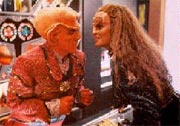
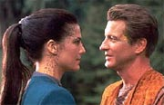
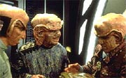
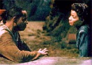
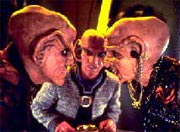
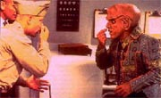
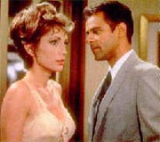
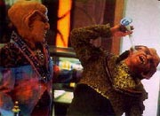
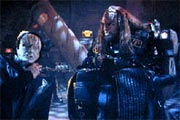
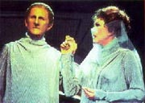

|
As
comdias de DS9, Parte I
 Provavelmente
muitos de vocs j ouviram que "Deep Space Nine foi
a mais sombria de todas as sries de Jornada". Essa
afirmao de fato verdadeira. Pode-se dizer que, com certeza,
sob qualquer definio que seja dada ao termo
"sombrio", que DS9 de longe a campe do
quesito dentre as sries do franchise (ainda iria alm, dizendo
que DS9 produziu algumas das horas de televiso mais
intensas que j assisti, em qualquer srie, em qualquer gnero).
O mais irnico para alguns (e paradoxal para outros) que a srie,
vista como um todo, seja tambm a mais positiva da histria de Jornada
nas Estrelas. Provavelmente
muitos de vocs j ouviram que "Deep Space Nine foi
a mais sombria de todas as sries de Jornada". Essa
afirmao de fato verdadeira. Pode-se dizer que, com certeza,
sob qualquer definio que seja dada ao termo
"sombrio", que DS9 de longe a campe do
quesito dentre as sries do franchise (ainda iria alm, dizendo
que DS9 produziu algumas das horas de televiso mais
intensas que j assisti, em qualquer srie, em qualquer gnero).
O mais irnico para alguns (e paradoxal para outros) que a srie,
vista como um todo, seja tambm a mais positiva da histria de Jornada
nas Estrelas.
A histria da srie, que se confunde com as histrias pessoais
de seus personagens, uma de transformao e redeno. Isso
est embutido na prpria estao Terok Nor, em uma mensagem de
infinita esperana. Se podemos transformar uma outrora estao
de minerao, operada por trabalho escravo, na ltima esperana
de sobrevivncia de toda a galxia, podemos mudar qualquer
coisa, at ns mesmos. O desenvolvimento dos personagens segue
em paralelo a essa premissa.
Uma parte notvel deste j citado "paradoxo" que,
apesar de ser considerada a mais "sombria" dentre as sries
de Jornada, DS9 aquela que mais possui humor.
Seja em episdios cmicos especficos, ou espalhado ao longo da
srie. DS9 partilha com a srie original de Jornada
uma caracterstica de no se levar a srio demais, saber rir de
si mesma (existem comdias de ambas as sries que s funcionam
devido a esta caracterstica em particular). Alm disso, ela
capaz de "quebrar a quarta parede" que
"separa" a audincia e o universo da srie, se
permitindo fazer criativas auto-pardias e outras insanidades
(tal artifcio tambm foi usado, de forma estupenda, para fazer
drama).
O presente artigo se preocupa em apresentar todas as comdias de DS9,
em ordem cronolgica e divididas por temporadas. O leitor vai
observar que as "comdias Ferengis", na maioria das
vezes, se mostraram verdadeiras catstrofes (o leitor tambm vai
perceber que muitos dos episdios comentados aqui esto entre os
piores da srie, provavelmente reforando o ditado de que
"mais difcil fazer comdia do que drama"). A definio
aqui dada a "comdia" extremamente ampla, visando
englobar tambm a maior quantidade possvel de "episdios
inofensivos e afins". As temporadas sero apresentadas com
um cabealho contendo, nmero, ttulo e uma breve descrio.
As duas primeiras temporadas tm comentrios mais breves do que
as cinco posteriores.
(Para os que ficarem se perguntando se estes "ttulos das
temporadas" so alguma brincadeira relacionada a
"aquela outra estao", a resposta : sim! A descrio
de cada temporada apresentada de forma a indicar o contexto em
que tais comdias aconteceram.)
Entretanto, antes de tratar do humor "desta estao",
devemos responder a duas fundamentais perguntas:
O que diabos um 'high-concept'?
O termo 'high-concept' um dos mais utilizados em Jornada.
Ele se baseia em uma "idia totalmente apresentada (ou
representada) por uma nica frase". Ele pode descrever
qualquer coisa, desde um pequeno elemento de uma nica cena, at
uma srie completa. A popularidade dos 'high-concepts' vm de
sua facilidade por ser auto-explicado e por poupar os leigos de
interminvel jargo tcnico (se voc quiser vender uma histria
para um produtor, bom que voc seja um 'expert' em
'high-concepts', devido ao reduzido tempo que normalmente voc
tem para apresentar a sua idia). O prprio Roddenberry
"vendeu" Jornada para a TV como uma
"caravana para as estrelas". Ele tambm apresentou um
conceito embutido, para permitir sua execuo dentro do oramento
de um programa de TV, de "desenvolvimento paralelo de outros
mundos em relao Terra" (que tambm um
'high-concept', por si s).
Em termos de episdios temos interminveis exemplos (mesmo s
citando exemplos da srie original): de um personagem famoso
("Kirk vira Jekyll e Hyde, ao mesmo tempo", em "The
Enemy Within"); de um filme ("Jornada
apresenta: Run Silent, Run Deep", em "Balance Of
Terror"); de um evento famoso ("Jornada
apresenta: Especial do dia das bruxas", em "Catspaw");
de um elemento ("A ameba espacial", de "The
Immunity Syndrome"); de um clssico Sci-Fi ("Jornada
apresenta: Metropolis", em "The Cloudminders");
"E se... 'Jack, o estripador' fosse um aliengena?", de
"Wolf In The Fold"; "E se... os deuses
gregos fossem aliengenas?", de "Who Mourns For
Adonais?"; todos os de desenvolvimento paralelo etc.
Talvez o roteirista mais famoso da histria de Jornada nas
Estrelas, no que tange ao uso de 'high-concepts', seja Brannon
Braga, roteirista e produtor da Nova Gerao e Voyager
e co-criador (ao lado de Rick Berman) e roteirista-chefe, da prxima
srie de Jornada nas Estrelas, Enterprise.
Respondida essa pergunta, vamos segunda, no menos sutil:
O que 'bom humor'?
A regra bsica rir com os personagens (da situao que os
cerca) e no dos personagens.
Elementos necessrios: confiana e foco na narrativa, energia,
naturalidade, criativo e contnuo suprimento de reviravoltas de
forma a no deixar a comdia morrer, no descaracterizar ou
retrocaracterizar os personagens de forma a fazer a "comdia"
funcionar em seus termos etc.
Elementos desejveis: no esquecer que a comdia um
subconjunto do drama (o importante tentar faz-la o mais
realista possvel), tentar "dizer algo" com um sorriso,
se preocupar mais em fazer sorrir do que rir etc.
(Como referncia quanto aos "elementos desejveis"
confiram as obras de Charlie Chaplin, Woody Allen, David E.
Kelley...)
Com esses dois conceitos em mente, podemos ento partir para...
As comdias de DS9, em ordem cronolgica
Primeira Temporada
"In The Hands Of The Prophets"
Um homem destrudo chega para tomar posse de uma estao de
minerao Cardassiana em runas, em rbita do planeta Bajor.
No pensamento deste homem, um posto apenas temporrio. Mas
aparentemente os Profetas tinham uma opinio diferente a
respeito.
(Um comeo contido e cauteloso, tambm na rea das comdias.)
Comdias:
"Q-Less" consegue ser uma continuao to ruim
ou pior do que "QPid", da Nova Gerao.
particularmente digna de nota a falta de ambientao de Q e
Vash na srie.
"Move Along Home" o tipo de episdio de que
"quanto menos falarmos melhor". A viso dos personagens
de DS9 brincando de amarelinha no para os fracos de
corao. PERDA TOTAL!
"The Nagus", alm de ser uma boa comdia (com
uma bvia pardia ao crime organizado), tem como maior virtude
dar uma face, atravs da figura do seu lder, aos Ferengis, os
outrora "viles fracassados da Nova Gerao".
digna de nota como a caracterizao de Zek correta desde o
incio.
"Progress" tem, em sua histria secundria
envolvendo as operaes de Jake e Nog no mercado de 'comodities'
local, a melhor comdia da temporada e um belo contraponto
histria principal envolvendo Kira.
"If Wishes Were Horses" aparentemente uma
tentativa de humor disfarada de primeiro contato ou vice-versa.
Particularmente, acho que ele no funciona de um jeito ou de
outro, uma lstima.
Segunda Temporada
"Necessary Evil"
Em meio confuso da poltica e da religio Bajoriana (esta
ltima culminando com a eleio de Winn como nova Kai), surgem
uma ameaa no seio da Federao, os Maquis, e uma ameaa alm
da Fenda Espacial, o Dominion. Ao final da temporada, Eris (a
primeira Vorta) avisa: "Vocs no tm idia do que comea
aqui."
(A temporada, apesar de conter alguns dos episdios mais intensos
da srie, foi particularmente ruim em episdios "cmicos,
inofensivos e afins".)
Comdias:
Ainda que no seja uma comdia propriamente dita, "Melora"
entretenimento involuntrio para ningum botar defeito. Onde
mais encontrar, empacotada com a sutileza de uma manada de
mastodontes em fria, a combinao de "uma mensagem
Trekker da semana sobre deficientes" somada a "um
absurdo romance Trekker da semana" com "uma COLISO de
duas tramas totalmente no-relacionadas"? Sem dvida, um
dos piores de toda a srie.
"Rules of Acquisition" outro episdio fraco,
que apresenta "uma verso Ferengi de Yentl", novamente
em tom de comentrio social grosseiro, com direito a muito humor
involuntrio e a primeira citao do nome Dominion em toda a srie.
Aparentemente uma histria de tringulo amoroso que foi rescrita
para aliviar completamente o drama e incluir uma absurda premissa
Sci-Fi, "Second Sight" foi um completo desastre
em tocar na solido de Ben Sisko. PSSIMO!
O pavoroso "Rivals" exemplifica como no se deve
fazer comdia: de forma indecisa, desfocada e sonolenta. Apesar
de a imagem de O'Brien e Bashir jogando Raquetebol ser uma das
mais lembradas da dupla, o episdio fez pouco pelo relacionamento
deles.
O pssimo "Playing God" um dos episdios
mais confusos da histria do franchise, mas tem espalhado nele
alguns momentos do mais fino humor. Em especial todas as
brincadeiras de Jadzia, fazendo Arjin "pensar o pior
dela", foram no ponto.
"Profit and Loss", uma verdadeira "verso
Ferengi para Casablanca", alm de estar mais para o embaraoso
do que para o engraado, faz um desservio ao personagem de Ben
Sisko, enquanto literalmente "brinca" com as relaes
polticas entre Bajor, Cardssia e a Federao. Existe sempre
o fator da presena de Garak (sempre benfica srie), mas
ainda assim o episdio ruim demais.
Terceira Temporada
"The Die Is Cast"
A Defiant designada para a estao, os Fundadores do Dominion
so revelados como o povo de Odo, os governos Romulano e
Cardassiano realizam misses independentes (obviamente no-autorizadas
nem por Bajor e nem pela Federao) para selar a Fenda Espacial
e deter a ameaa Dominion, uma gigantesca fora-tarefa formada
por naves da Tal-Shiar Romulana e da Ordem Obsidiana Cardassiana,
em misso de destruir o planeta natal dos Fundadores, vtima
de um emboscada e totalmente destruda pelos Jem'Hadar (um
Fundador infiltrado como Romulano avisa a Odo e Garak que as nicas
coisas que restam entre o seu povo e o controle do quadrante Alfa
so o Imprio Klingon e a Federao e mesmo estes obstculos
no permanecero por muito tempo), um Fundador, infiltrado como
um embaixador da Federao, coloca a Defiant trancada no curso,
em uma misso que ir produzir uma guerra com os Tzenkhati. Odo
tem de matar o tal Fundador para impedir o desastre. Antes de
morrer o Fundador diz: " muito tarde, ns estamos em todo
lugar."
(Esta foi a temporada da virada do personagem Ben Sisko, apesar da
srie como um todo ter passado por uma espcie de crise de
identidade. Os episdios "cmicos" tiveram mais baixos
do que altos.)
Comdias:
 No
bom "The House of Quark", Quark mata por acidente
um Klingon bbado e herda a "casa" do Klingon e a sua
esposa (de nome Grilka). Aps ajudar a Klingon a resolver uma
disputa com uma "casa" rival, Quark recebe o "divrcio"
e os dois permanecem amigos. O episdio de fato engraado e
consegue fazer a interao entre Klingons e Ferengis sem ferir
as duas culturas.
No bom "Civil Defense", um antigo programa
do computador da estao, dos tempos da ocupao, reativado
por engano, confundindo a nova tripulao com trabalhadores
Bajorianos em fuga. Um radiante Dukat chega estao, querendo
"mundos e fundos" para liberar o computador. A o feitio
vira contra o feiticeiro e o computador acaba por considerar Dukat
um traidor. Da todos tm de se juntar para resolver o problema.
Ainda que o fechamento no seja nenhuma maravilha, diverso
garantida a maior parte do tempo, com o bnus de esmiuar mais a
rivalidade entre Dukat e Garak.
 "Meridian"
um dos piores momentos da srie. Nele Sisko e cia. encontram
um planeta que vai e volta de nosso Universo, permanecendo um
breve espao de tempo aqui e uma literal eternidade em
"outro lugar". Dax (no curso de uma hora de televiso)
se apaixona perdidamente por um nativo, decide jogar tudo pro alto
(inclusive a sagrada vida do seu simbionte) e arruma um meio de
voltar com o seu amado e o seu planeta para este "tal
lugar". Obviamente o plano falha e Dax termina o episdio
inconsolvel, para no lembrar de nada no resto da srie.
Perfeito!
"Fascination" tambm um dos piores episdios
da srie, um verdadeiro (e tristemente realizado) "DS9
apresenta: Sonhos de uma noite de vero". A embaixadora
Lwaxana "Queima tubo de imagem" Troi (interpretada por
Majel "Quem foi que deu autorizao pra esta mulher
trabalhar como atriz?" Barrett) visita a estao, para
estar com Odo durante o festival de gratido Bajoriano. Ela comea
a ter problemas com suas habilidades telepticas, fazendo todos
os personagens ficarem apaixonados por algum. O resto vocs
podem imaginar. Uma amostra: imaginem um Bareil, no cio, tentando
agarrar Dax e agredir Sisko (por quem a Trill fica apaixonada) e
acabar sendo nocauteado por Jadzia. Perfeito ao quadrado!
 Em
"Prophet Motive", o Grande Nagus Zek tem uma
experincia com os Profetas, que o transformam em um ser mais
esclarecido. Este novo Zek est decidido a reformar toda a
sociedade Ferengi, transformando-a em uma mais generosa e bondosa.
Quark fica horrorizado e acaba por convencer os Profetas a
desfazer o ocorrido com o Grande Nagus e as cpias das Regras de
Aquisio rescritas por Zek so todas destrudas. Apesar de no
chegar ao ponto de classificar o encontro dos Ferengis com os
Profetas como "hertico", o episdio no faz nada por
mim, muito ruim mesmo. A obviedade a "fora
motriz" do episdio e apesar do confronto final entre Quark
e os Profetas acabar tendo os seus mritos (por mais incrvel
que possa parecer), no consegue redimir tudo que veio antes.
 No
bom "Through The Looking Glass", Sisko tem de
tomar o lugar da sua falecida contraparte do "universo do
Espelho" para tentar convencer a Jennifer Sisko daquele
universo (que tambm esposa de sua falecida contraparte e uma
cientista conceituada), a se unir aos rebeldes. No caminho ele tem
de demonstrar um grande jogo de cintura e "oferecer servios
de alcova" s contrapartes de Jadzia e Kira.
 Em
"Family Business", Quark levado ao planeta
natal dos Ferengis (o qual aparece pela primeira vez em Jornada)
para responder a acusaes feitas contra sua me, tais como,
obter lucros e usar roupas, ambas proibidas pelas leis Ferengis.
Aps muita confuso e para ficar de bem com o "Leo"
Ferengi, Ishka acaba confessando os seus "crimes" e
devolvendo os seus lucros (porm Quark no sabe que ela devolveu
apenas parte deles). Mais um pssimo episdio que no sabe se
uma comdia ou um drama familiar leve (falar da interao
entre irmos e entre me e filhos) e termina por no ser nenhum
dos dois, uma perda de filme.
Quarta temporada
"Paradise Lost"
Worf trazido para a estao como oficial de operaes
estratgicas, o tratado de paz da Federao com os Klingons
revogado, a econmia Cardassiana entra em colapso, as atividades
Maquis na Zona Desmilitarizada atingem um nvel sem precedentes,
acontece um golpe de Estado na terra. Ao final da temporada, Odo
julgado pelo seu povo pelo crime de um ano atrs. Odo tem
implantada dentro de si a certeza de que Gowron, o lder do Imprio
Klingon, um Fundador disfarado.
(A melhor temporada de Jornada desde as duas primeiras da srie
original, tem um bom registro de comdias.)
Comdias:
 Finalmente
Jornada ofereceu a sua prpria verso dos eventos de
1947, em Roswell, Novo Mxico. Os aliengenas que caram na
Terra foram os Ferengis Rom, Nog e Quark. Vtimas de um acidente,
eles so lanados no passado, onde so presos para exame pelo
exrcito americano e confundidos com Marcianos. "Litle
Green Men" um bom episdio que faz graa com
(aparentemente) todos os filmes do gnero. Isso sem falar nos
clichs da prpria Jornada, como o tradutor universal e as
privadas que ningum nunca viu. Detalhe: a nave de Quark
guardada no infame "Hangar 18".
 "Our
Man Bashir" uma excelente stira aos filmes de
espionagem (Bond, mas no somente Bond) que acaba por transcender
esta premissa e oferecer algumas verdades sobre o relacionamento
de Bashir e Garak. No percam as aventuras de Kira Nerys como a
coronel russa Anastasia Komononov (com direito a sotaque e tudo),
Miles Edward O'Brien como o caolho Falcon, Jadzia Dax como a (tmida
e irresistvel) professora Honey Bare, Worf como o fil valete
Duchamps e Benjamin Sisko como (o super-vilo maligno que quer
dominar o mundo) dr. Hippocratus Noah.
 "The
Bar Association" o episdio em que Rom promove uma
greve para os funcionrios do Quark's, com direito a piquete na
porta do estabelecimento e tudo mais. Obviamente isso contra a
lei Ferengi, e Quark, na iminncia de perder tudo, faz um acordo,
"por debaixo do panos", com Rom de forma a ficar bem,
perante as autoridades do seu povo. Ao final, todos os funcionrios
voltam ao trabalho com suas exigncias secretamente atendidas,
exceto Rom, que acaba indo trabalhar na equipe de manuteno da
estao. Este mais uma "tpica comdia Ferengi"
que usa um simplista histria (com algum valor), como desculpa
para disparar as suas 'gags'. Uma das poucas cenas interessantes
aquela em que Quark tenta utilizar garons hologrficos no
bar, realmente hilrio. (O irnico do episdio que Armin
Shimerman, o ator que representa o Quark, tem sido muito ativo na
direo de sindicatos durante toda a sua vida profissional.)
Na histria secundria de "Accession", Keiko
volta estao e informa a O'Brien que ela est grvida. O
restante desta pequena histria lida com este fato e de como
O'Brien e Bashir ficaram unidos quando da ausncia de Keiko. Um
doce s!
 Em
"Shattered Mirror", voltamos ao "universo do
Espelho", onde os rebeldes esto empenhados na construo
da sua prpria verso da Defiant. O episdio beira a insanidade
absoluta, em seu humor, e tem bom valor de entretenimento. O
destaque vai para surra que a "mirror-Defiant", com
Sisko ao leme, d em um gigantesco cruzador Klingon. Imperdvel!
 Falando
em comdia involuntria, temos "The Muse".
Neste, que um dos piores episdios da srie, temos duas histrias
incrivelmente ruins. Na primeira temos uma bizarra aliengena (a
musa do ttulo), que oferece inspirao s custas da energia
energia vital de seus "inspirados" (at a morte deles),
e estava fazendo exatamente isto com Jake, at ser impedida por
Ben Sisko. Na histria secundria, Lwaxana "Cuja atriz
deveria ser presa por ajudar a escrever este desastre" Troi
est de volta, grvida e fugindo do seu marido, membro de uma raa
cuja tradio demanda que os filhos sejam criados exclusivamente
pelos homens. Odo se voluntaria para casar com a embaixadora e da,
como tutor legal, oferecer a guarda da criana para a me. O nico
destaque vai para o ttulo do livro que Jake estava escrevendo,
Anselem, uma referncia ao clssico episdio "The
Visitor" (foi estabelecido em livros que
"Anselem" quer dizer "pai", em Bajoriano).
Antimatria pura!!!
Na histria secundria de "For The Cause",
temos a primeira aproximao entre Garak e Zyial (a filha
bastarda Bajoriana-Cardassiana de Dukat). O que engraado
que at o ltimo instante Garak acha que a menina est
planejando mat-lo. Uma hilria conversa com Quark s faz
aumentar a parania de Garak.
muito raro encontrar um bom veculo para os Ferengis, e "Body
Parts" sem dvida um deles. Primeiramente, a idia
da histria secundria de, devido a um acidente, se transferir o
feto do tero de Keiko para o de Kira foi uma maneira genial de
colocar a gravidez da vida real de Nana Visitor na srie (a idia
de Kira se mudar para os aposentos dos O'Brien, tambm foi muito
legal). A histria principal lida com um desiludido Quark, com
apenas uma semana de vida, e que vende os seus restos mortais no
mercado, antecipadamente. Quark posteriormente descobre que ele no
vai morrer, mas j tarde demais e ele vem a descobrir que o
comprador dos seus restos mortais, foi ningum menos do que o seu
inimigo Brunt. Ele pode morrer em sete dias e honrar o contrato ou
quebr-lo, o que e obviamente proibido pelas leis Ferengis. Ele
considera um assassinato pelas mos de Garak e quando ele pensa
que o Cardassiano fez o servio, ele vai parar na "Divine
Treasury" (o ps-vida Ferengi e um dos mais interessantes
desenvolvimentos desta raa), onde ele encontra Gint (o primeiro
Nagus, que alm disso tem uma tremenda semelhana com o seu irmo
Rom) que o aconselha a quebrar o contrato. Quark descobre que
estava sonhando e quebra o contrato com Brunt. O liquidador toma
todos os seus pertences, e fixa um cartaz na porta do Bar,
formalmente transformando Quark em um pria, perante o seu povo.
Mas para espanto de Quark, um a um vo chegando os tripulantes da
estao, todos trazendo uma item potencialmente til a um bar.
Rapidamente o bar est de novo em funcionamento, e pela primeira
vez Quark parece realmente tocado pela generosidade.
Continua!
Luiz
Castanheira editor do Trek
Brasilis
|